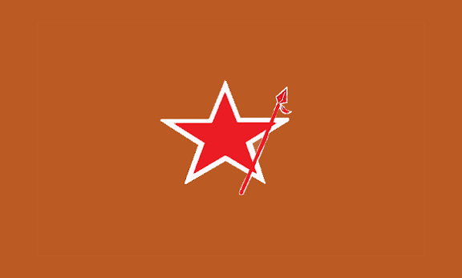

Los límites de la subversión performática: a propósito de los documentos del MJ Lautaro
Una lectura crítica de los documentos del MJ Lautaro: diagnóstico certero, praxis limitada y el desfase entre grandilocuencia y eficacia política.

La lectura de la "Entrevista al Comité Central del MJ Lautaro"1 (diciembre de 2025) y del "Plan de Subversión 2026"2 de la misma organización permite un acercamiento a una de las experiencias políticas más longevas de la izquierda revolucionaria chilena. No se trata de cualquier grupo: su existencia ininterrumpida por más de cuatro décadas, su capacidad de sobrevivir a la represión dictatorial y democrática, y su inserción en organizaciones sociales de base son hechos que merecen ser reconocidos. Sin embargo, el desfase entre la grandilocuencia de su diagnóstico y la eficacia limitada de su praxis constituye un síntoma de los problemas más profundos que aquejan a la izquierda revolucionaria chilena.
El diagnóstico que el MJ Lautaro despliega en ambos documentos coincide, en lo fundamental, con el que cualquier observador atento de la realidad chilena podría sostener. La crisis de legitimidad del régimen político, la descomposición de su clase dirigente, el agotamiento del modelo neoliberal, la fragmentación social y la precarización creciente de la vida popular son fenómenos ampliamente documentados. Temas que aparecen regularmente en los muchos medios de la izquierda trotskista, de sectores miristas, y hoy incluso del PC, etc.
Cuando Lautaro afirma que "el poder no cuenta con argumentos" o que la democracia es "ancha para las élites y angosta para los pueblos", está constatando lo que ya es parte del sentido común crítico. Su "mirar", del que tanto se enorgullecen, no es errado; pero tampoco es particularmente original o esclarecedor. Se limita a describir la superficie de los fenómenos sin lograr articular una teoría de la totalidad que permita comprender su dinámica estructural. Esa especie de análisis diletante se camufla tras un lenguaje florido que termina transformándose en un código críptico.
El problema central de sus planteamientos no reside en el diagnóstico, sino en su traducción práctica. Lautaro definió 2025 como el "año decisivo para la subversión chilena". Cuando el año terminó sin que se produjera una transformación sustancial, su explicación fue que "la praxis no estuvo a la altura de su mirada". Esta argumentación revela una comprensión insuficiente de la dialéctica entre lo objetivo y lo subjetivo. No se trata de que su mirada fuera certera y su acción fallida, sino de que su mirada no supo leer la correlación de fuerzas real, ni distinguir entre una tensión manifiesta y una tensión crítica, ni advertir que la homeostasis estructural del capital seguía operando con eficacia. Su diagnóstico no era errado, pero sí incompleto: carecía de la mediación que permitiera pasar de la constatación de la crisis a la construcción de una alternativa de poder.
La autocrítica que Lautaro despliega es, además, de un tenor que resulta ajeno al materialismo histórico. Atribuyen su parálisis a "miedos" individuales: miedo a lo nuevo, miedo a la prisión, miedo a sentirse pueblo. Como si la revolución se hiciera con suficiente voluntad y pureza de espíritu. Pero la conciencia no se transforma por decreto de la voluntad; la conciencia es producto de condiciones materiales. Si los revolucionarios están paralizados, si el movimiento popular no logra organizarse, no es principalmente porque tengan miedo, sino porque la pauperización intelectual, la colonización del sentido común por el capital, ha afectado a todos los sectores, incluidos los que se autodenominan vanguardia. El capitalismo no solo explota el trabajo; también coloniza el cerebro. A través de la industria cultural, los medios de comunicación, la educación de mercado y las redes sociales algorítmicas, el sistema produce subjetividades fragmentadas, individualistas, incapaces de pensar en términos de totalidad. Eso no es un problema de "voluntad", sino de condiciones objetivas, y no se resuelve con exhortaciones morales, sino con organización, formación teórica y disputa sistemática del sentido común.
Esta tendencia al moralismo se expresa también en su relación con los "no organizados". Lautaro ha elevado a categoría estratégica a esos sectores que protagonizan protestas espontáneas pero que no construyen poder duradero. Para ellos, los "no organizados" son "un diamante en bruto", la fuerza más potente del Pueblo. Pero lo que ellos llaman "no organizados" es, en los hechos, una expresión del anarquismo y del espontaneísmo: tradiciones que rechazan la organización, el partido y la dirección política. Aquí se produce un error de lectura: confunden el protagonismo circunstancial de estos sectores en las protestas con una fuerza revolucionaria organizada. Pero la protesta espontánea, por definición, no se organiza. Es una expresión de rabia, no una construcción de poder. Idealizarla es renunciar a la tarea política fundamental: organizar a los explotados, darles dirección, construir poder dual. Lautaro tiene inserción real en organizaciones sociales, pero esa inserción no se traduce en una capacidad de dirección estratégica. Su presencia en los territorios es un hecho, pero no logra articular esa presencia en una fuerza capaz de disputar la hegemonía.
En cuanto a su práctica de la violencia, es necesario hacer una distinción. No se trata de condenar la violencia revolucionaria en abstracto. En el contexto del estallido social de 2019 y en acciones concretas de resistencia territorial, esa violencia tuvo un sentido: expresó el rechazo popular a un orden injusto y contribuyó a romper el cerco comunicacional. El problema es que, en las condiciones actuales —post-estallido, ofensiva represiva consolidada, fragmentación del movimiento popular—, esa violencia ha devenido performática y estéril. No construye poder dual, no organiza a los sectores precarizados, no disputa el sentido común. Se ha convertido en un ritual que el sistema sabe absorber con represión selectiva y que, además, le sirve para justificar su propia violencia. La violencia revolucionaria no es una cuestión de principio, sino de eficacia estratégica en una coyuntura determinada.
Ambos documentos adolecen, además, de una ausencia total de teoría de la dependencia. No problematizan el lugar de Chile en la división internacional del trabajo, ni el control extranjero sobre los recursos estratégicos (cobre, litio, agua), ni los tratados de libre comercio que atan al país. Su llamado a la "inserción soberana en el Sur Global" es vago y no especifica cómo se rompe con la dependencia imperialista más allá de la "solidaridad antiimperialista" y la "protesta tricontinental". China es mencionada como una potencia emergente, pero no se pregunta por el carácter capitalista de su modelo ni por las relaciones de explotación que establece con la periferia. En este punto, Lautaro se queda en el plano de las declaraciones de principios, sin atreverse a interrogar las mediaciones concretas que permitirían una verdadera ruptura.
No se trata de negar la necesidad de la violencia revolucionaria, ni de desconocer la justeza de la indignación popular. Se trata de señalar que la violencia sin organización, sin teoría, sin estrategia, es una forma de acción que el capitalismo sabe gestionar. La historia de las revoluciones triunfantes muestra que no se hicieron con acciones aisladas, sino con partidos, con cuadros, con programas, con la construcción paciente de poder dual.
Como hemos planteado en nuestro texto "La hora de la política", es la hora de dejar de culparse y empezar a organizarse, de bajar de la torre de marfil y hacer las autocríticas pertinentes. Es también la hora de reconocer que el enemigo no está dentro de nosotros, sino en las relaciones de producción, en la dependencia imperialista, en las racionalidades automatizadas que enajenan el sentido común. Y que para vencerlo, no basta con voluntad; hace falta teoría, organización y paciencia estratégica. Mientras el MJ Lautaro no logre traducir esa inserción en una dirección política efectiva, su diagnóstico seguirá siendo una afectada descripción de la crisis, y su praxis, un eco de su propia ineficacia.
1 "Entrevista al Comité Central del MJ Lautaro": https://sl1nk.com/akxhd14 ↩
2 "Plan de Subversión 2026": https://l1nq.com/9s92zu6 ↩